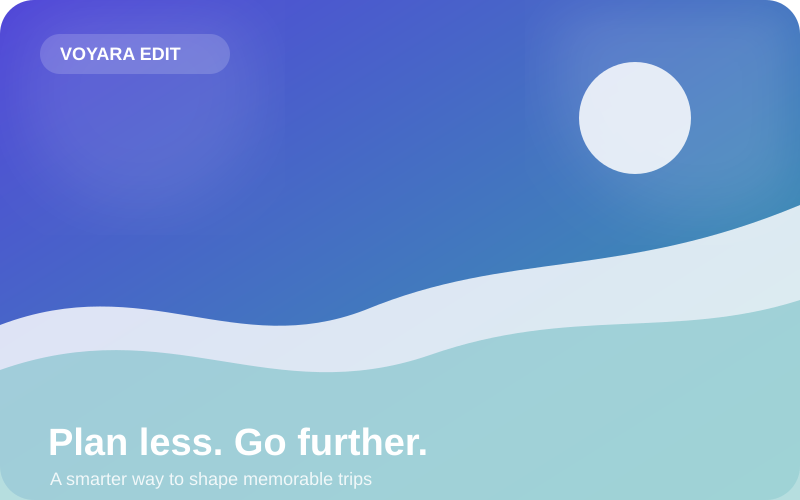

1. Choose your pace
Set destination, length, interests and budget style. Voyara creates a sensible starting structure.
Turn a destination, travel style and budget into a flexible day-by-day trip plan — then shape every detail around the way you actually like to travel.

Start broad, generate a useful first draft, then refine the days instead of juggling twenty open tabs.
Set destination, length, interests and budget style. Voyara creates a sensible starting structure.
Keep mornings focused, leave breathing room between stops and balance must-sees with local time.
Store trip drafts in your browser and revisit favorites without creating an account.
The best days have anchors, not minute-by-minute pressure. Our sample itineraries build around three meaningful moments per day, with room for transit, rest and accidental discoveries.
Open interactive itineraryVoyara design principle
Use the demo planner to create and save a flexible itinerary directly in your browser.